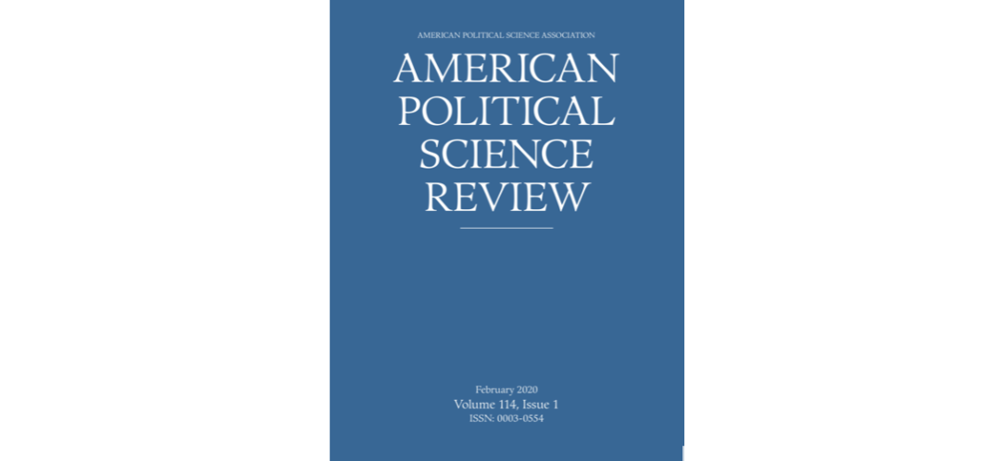

收录于合集
期刊简介： 《美国政治学评论》（American Political Science Review）是美国政治学会（American Political Science Association）旗下最知名的季刊。自1906年创刊并由剑桥大学出版社出版以来，逐步成为政治学最具权威性的期刊之一。内容涉及政治学理论、美国政治、公共政策、公共管理、比较政治、国际关系等。
编者按： 摘要编译主要由各高校在读硕士生和博士生自愿组织进行。受学生学识及翻译水平所限，译文可能有诸多不当之处，还望读者们见宥，也欢迎留言讨论。此外，由于版权所限，需要阅读原文的读者请通过所在学校/机构的图书馆数据库或其他途径访问下载。
期刊目录
1. 社会隔离和抵抗形式
2. 铁丝网之外：美国在东道国的军事部署与民意
3. 为什么军备控制如此罕见？
4. 当整体优于部分之和时：关于民粹主义态度和其他多维度概念的概念化与测量
5. 通约难题：评估行为对行为影响的概念困境
6. 民主在美国？美国的党派主义、极化和对民主的稳健支持

社会隔离和抵抗形式
题目： Social Isolation and Repertoires of Resistance
作者： Emily Kalah Gade, 埃默里大学政治学系助理教授
摘要： 位于约旦河西岸希伯伦省的检查站代表着以色列对巴勒斯坦居民无处不在的控制。利用2015年“个人抵抗运动”期间进行的71次访谈，本文归纳性地构建了社会隔离和不同方式的抵抗之间关系的理论。检查站并没有强迫民众服从国家，而是改变了抵抗的性质和结构。作者认为检查站为民众建立了社会关系。阻止社会关系的检查站会引发绝望感，并助长对通常以暴力形式进行的抵抗的个体的支持。在检查站将社区作为整体隔离但没有破坏社区内部社会关系的地区，民众对改变的可能性仍抱有希望，这强化了群体性抵抗的倾向。本文指出检查站对民众产生的负面影响，并强调了压制性国家权力是如何抑制某种形式的抵抗但却引起对其他形式抵抗的支持的。
Checkpoints in the West Bank’s Hebron Governorate represent Israel’s ever- present power over Palestinian civilians. Drawing on 71 interviews conducted during the Intifada of Individuals (2015), this article inductively builds theory about the relationship between social isolation and different modalities of resistance. Rather than forcing civilians to comply with the state, checkpoint apparatus instead change the nature and texture of resistance. I suggest that checkpoints structure social connections for civilians on the ground. Checkpoint apparatus which inhibit social connection engender a feeling of hopelessness and foster support for individual, often violent, resistance. Where checkpoints isolate a community as a whole but did not disrupt within-community social connections, citizens maintain hope for the possibility of change, which facilitates a preference for collective resistance. This article identifies troubling consequences checkpoints have on civilians and highlights how oppressive state power can limit some modalities of resistance only to engender support for others.
铁丝网之外：
美国在东道国的军事部署与民意
题目： Outside the Wire: U.S. Military Deployments and Public Opinion in Host States
作者： Michael A. Allen，博伊西州立大学政治学系副教授；Michael E. Flynn，堪萨斯州立大学政治学系副教授；Carla Martinez Machain，堪萨斯州立大学政治学系副教授；Andrew Stravers，兰德公司国防和政治科学助理
摘要： 在拥有美国海外驻军的东道国内，其公民是如何看待这种军事存在的？利用来自14个国家的跨国调查新数据，作者检验了以不同形式与美国军事存在进行接触是如何影响东道国公民对美国军队、政府和人民的态度的。作者发现，接触美军人员或从美国驻军中获取经济利益，与公民对美国军事存在、人民和政府的更大支持相关。本研究对理解美国军事设施在影响东道国社会结构方面所发挥的作用，以及美国海外军事活动的政策影响具有深远意义。
How do citizens within countries hosting U.S. military personnel view that presence? Using new cross-national survey data from 14 countries, we examine how different forms of exposure to a U.S. military presence in a country affect attitudes toward the U.S. military, government, and people. We find that contact with U.S. military personnel or the receipt of economic benefits from the U.S. presence correlates with stronger support for the U.S. presence, people, and government. This study has profound implications for the role that U.S. installations play in affecting the social fabric of host nations and policy implications for the conduct of U.S. military activities outside the United States.
为什么军备控制如此罕见？
题目： Why Arms Control Is So Rare
作者： Andrew J. Coe, 范德堡大学政治学系助理教授；Jane Vaynman, 天普大学政治学系助理教授。
摘要： 军备令人困惑的原因与战争相同:它产生的结果可以通过谈判来实现，而不需要将成本巨大的资源转而投入到武器装备上。尽管如此，军备控制在历史上是极其罕见的，军备无处不在，使人类付出了巨大的代价。作者发展和检验了一个理论来解释为什么军备是如此普遍和对它的控制是如此罕见。军备控制的主要障碍是需要进行监督，使一个国家的军备具有足够的透明度，以确保其遵守规定，但又不至于威胁到其安全。作者提出的证据表明在三个不同的情境下这种权衡削弱了军备控制，它们分别是：海湾战争后伊拉克的武器计划、两次世界大战期间的大国军备竞争以及冷战期间超级大国之间的军事对抗。在过去的两个世纪里，这些军备竞赛几乎占全球军备的40%。
Arming is puzzling for the same reason war is: it produces outcomes that could instead be realized through negotiation, without the costly diversion of resources arming entails. Despite this, arms control is exceedingly rare historically, so that arming is ubiquitous and its costs to humanity are large. We develop and test a theory that explains why arming is so common and its control so rare. The main impediment to arms control is the need for monitoring that renders a state’s arming transparent enough to assure its compliance but not so much as to threaten its security. We present evidence that this trade-off has undermined arms control in three diverse contexts: Iraq’s weapons programs after the Gulf War, great power competition in arms in the interwar period, and superpower military rivalry during the Cold War. These arms races account for almost 40% of all global arming in the past two centuries.
当整体优于部分之和时：
关于民粹主义态度和其他多维度概念的概念化与测量
题目： When the Whole Is Greater than the Sum of Its Parts: On the Conceptualization and Measurement of Populist Attitudes and Other Multidimensional Constructs
作者： Alexander Wuttke，曼海姆大学政治学系博士研究生；Christian Schimpf，阿尔伯塔大学政治学系研究助理，曼海姆大学经济与社会科学学院博士候选人；Harald Schoen,曼海姆政治学系教授。
摘要： 当一个成分的较高值不能抵消另一个成分的较低值时，多维度概念是非补偿性的。将多维度现象的组成成分视为非补偿性而不是可替代的做法在概念和经验上都有广泛影响。为了阐明这一点，作者着重关注了在当代关于自由民主辩论中占据突出地位的民粹主义态度问题。鉴于类似的公众态度结构，民粹主义的概念价值取决于其作为一种综合态度的独特规范，其特征是其存在着非补偿性的子维度概念。然而，现有的实证研究中很少考虑这种概念特征。作者提出了一种操作化策略，这种操作化手段旨在恰当处理非补偿性多维度概念的独特特征。来自12个国家的5个民粹主义量表的证据揭示了民粹主义概念与测量不一致的现状和后果。重要的是，在某些情况下，使用概念上完善的操作化策略，会颠覆先前关于民粹主义态度实质性作用的研究发现。
Multidimensional concepts are non-compensatory when higher values on one component cannot offset lower values on another. Thinking of the components of a multidimensional phenomenon as non-compensatory rather than substitutable can have wide-ranging implications, both conceptually and empirically. To demonstrate this point, we focus on populist attitudes that feature prominently in contemporary debates about liberal democracy. Given similar established public opinion constructs, the conceptual value of populist attitudes hinges on its unique specification as an attitudinal syndrome, which is characterized by the concurrent presence of its non-compensatory concept subdimensions. Yet this concept attribute is rarely considered in existing empirical research. We propose operationalization strategies that seek to take the distinct properties of non-compensatory multidimensional concepts seriously. Evidence on five populism scales in 12 countries reveals the presence and consequences of measurement-concept inconsistencies. Importantly, in some cases, using conceptually sound operationalization strategies upsets previous findings on the substantive role of populist attitudes.
通约难题：
评估行为对行为影响的概念困境
题目： The Commensurability Problem: Conceptual Difficulties in Estimating the Effect of Behavior on Behavior
作者： Ethan Bueno de Mesquita，芝加哥大学哈里斯公共政策学院教授；Scott A. Tyson，罗切斯特大学政治学系助理教授
摘要： 本文提出了可通约难题：实际研究设计产生的估计值何时能够符合理论数值？本文在以下设定中研究了这一问题，干预项和结果项都是行为并且干预效应的值可以分解为直接和信息两块。本文得出了两个结果：首先，如果研究设计中的干预项是对决策者信息的充分计量，那么实际研究设计的值才可能与理想性实验的总效果相符。其次，如果满足以下两个条件，那么与非理想实验相对应的研究设计仅仅隔离了理想型实验的直接效应。条件一是对于非理想型实验来说不存在信息效应，条件二是决策者的回应函数在干预和信息上是可以加性分解的。本文在三类研究中应用了这一结果：抗争的效果，对女性候选人的赋权和在反叛乱中不加区分的使用暴力。
We pose the commensurability problem: When do the estimates generated by actual research designs correspond to quantities of theoretical interest? We study this question in settings where both treatment and outcome are behavior and the treatment effect of interest is decomposable into direct and informational channels. We establish two results. First, the quantity estimated by an actual research design is only commensurate with the total effect in the ideal experiment if treatment status in the research design is a sufficient statistic for the decision-makers’ information. Second, a research design corresponding to a nonideal experiment isolates just the direct effect in the ideal experiment if two conditions hold: (i) there is no information effect in the nonideal experiment and (ii) the decision-maker’s response function is additively separable in treatment and information. We apply our results to three substantive literatures: the efficacy of protest, the empowerment of female candidates, and indiscriminate violence in counterinsurgency.
民主在美国？
美国的党派主义、极化和对民主的稳健支持
题目 ：Democracy in America? Partisanship, Polarization, and the Robustness of Support for Democracy in the United States
作者： Matthew H. Graham，耶鲁大学政治学系博士候选人；Milan W. Svolik，耶鲁大学政治学系教授
摘要： 美国民众对民主的支持能足以稳健地来抵制民选政客的不民主行为吗？本文建立了一个作为民主制衡的公众模型并使用两种经验策略进行评估：一个是原始的、全国范围内的众议员候选人选取实验，其中一些政客为了当选违反了民主的核心原则，另一个是2017年蒙大拿州美国众议员补选的自然实验。本文的研究设计可以推断美国民众是否愿意使用民主原则来换取其他有用但是潜在冲突的考虑因素，比如政治意识形态、党派主义以及政策偏好等。本文发现美国公众作为民主制衡的能力相当有限：只有一小部分美国民众在选举中将民主原则置于优先考虑位置，他们的选择削弱了党派主义的强度、政策的极端性以及候选人平台的分化程度等极化指标。本文的发现与政治温和和贯穿各领域的分歧之于民主稳定重要性的经典观点相呼应，并且强调了极化对民主造成的危害。
Is support for democracy in the United States robust enough to deter undemocratic behavior by elected politicians? We develop a model of the public as a democratic check and evaluate it using two empirical strategies: an original, nationally representative candidate-choice experiment in which some politicians take positions that violate key democratic principles, and a natural experiment that occurred during Montana’s 2017 special election for the U.S. House. Our research design allows us to infer Americans’willingness to trade-off democratic principles for other valid but potentially conflicting considerations such as political ideology, partisan loyalty, and policy preferences. We find the U.S. public’s viability as a democratic check to be strikingly limited: only a small fraction of Americans prioritize democratic principles in their electoral choices, and their tendency to do so is decreasing in several measures of polarization, including the strength of partisanship, policy extremism, and candidate platform divergence. Our findings echo classic arguments about the importance of political moderation and cross-cutting cleavages for democratic stability and highlight the dangers that polarization represents for democracy.
编译/校对：施榕、杨端程、康张城、殷昊、赵德昊、吴温泉
编辑：郭静远
【政文观止Poliview】系头条号签约作者